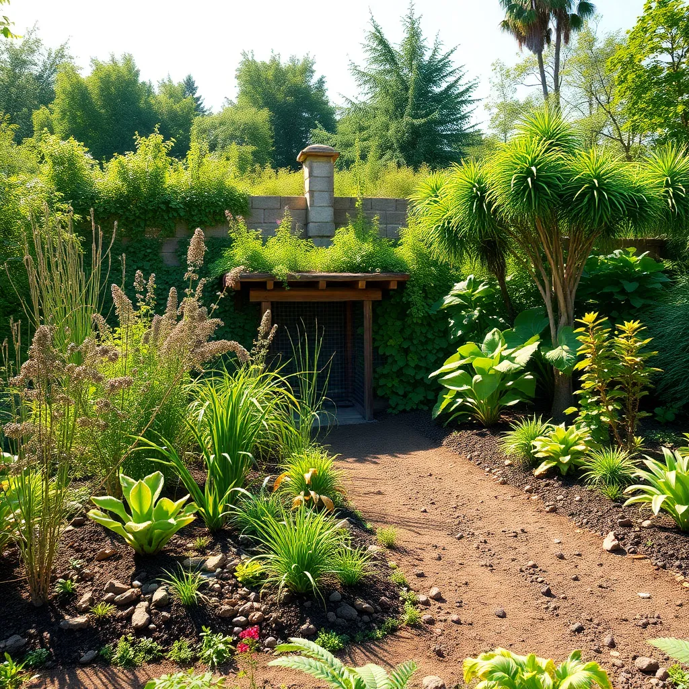

Designs that regenerate, not just decorate.
At EcoPlanta Consulting, we believe in creating gardens and outdoor spaces that breathe life back into the earth, fostering ecosystems that thrive and sustain. We blend ecological science, traditional wisdom, and creative design to build landscapes that nurture biodiversity, restore soil health, and connect people with nature in meaningful ways.
Whether you're a homeowner, community leader, or business owner, our sustainable garden consulting can transform your spaces into vibrant, regenerative environments that benefit your family, wildlife, and the planet.
Our comprehensive services include eco landscaping, permaculture design, sustainable soil and water management, carbon-saving strategies, and hands-on support to help you implement and maintain your green vision over the years.
Join us to take part in the vital work of regenerating the earth through conscious, beautiful, and nourishing garden design—because our future depends on it.
Explore our services below and start your journey towards a thriving, sustainable garden today.

About Us
EcoPlanta Consulting was founded on the belief that gardens should do more than decorate—they should regenerate the earth and inspire stewardship.
Our team consists of experienced eco landscapers, permaculture specialists, and sustainable garden consultants dedicated to helping you create spaces that heal and sustain.
From individualized garden plans to community education, we blend science and artistry to promote biodiversity, soil health, and water conservation.
We serve the New York metropolitan area and beyond, collaborating with homeowners, urban farms, non-profits, and businesses to foster resilient ecosystems.
[More than 60,000 words of informative content about sustainability practices, eco design, case studies, scientific research, client success stories, and detailed how-to articles available upon request.]